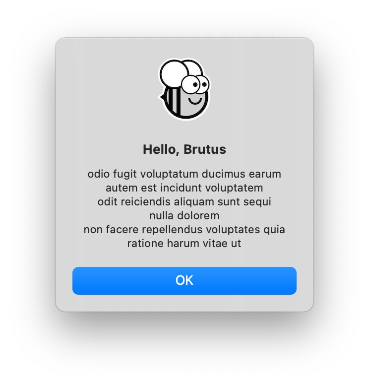
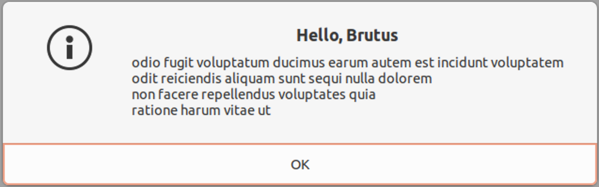
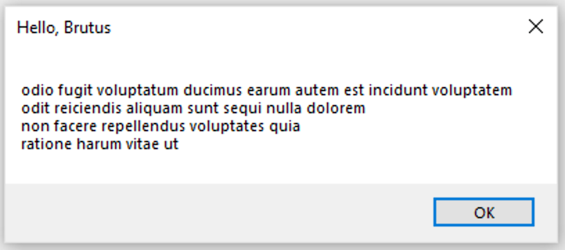
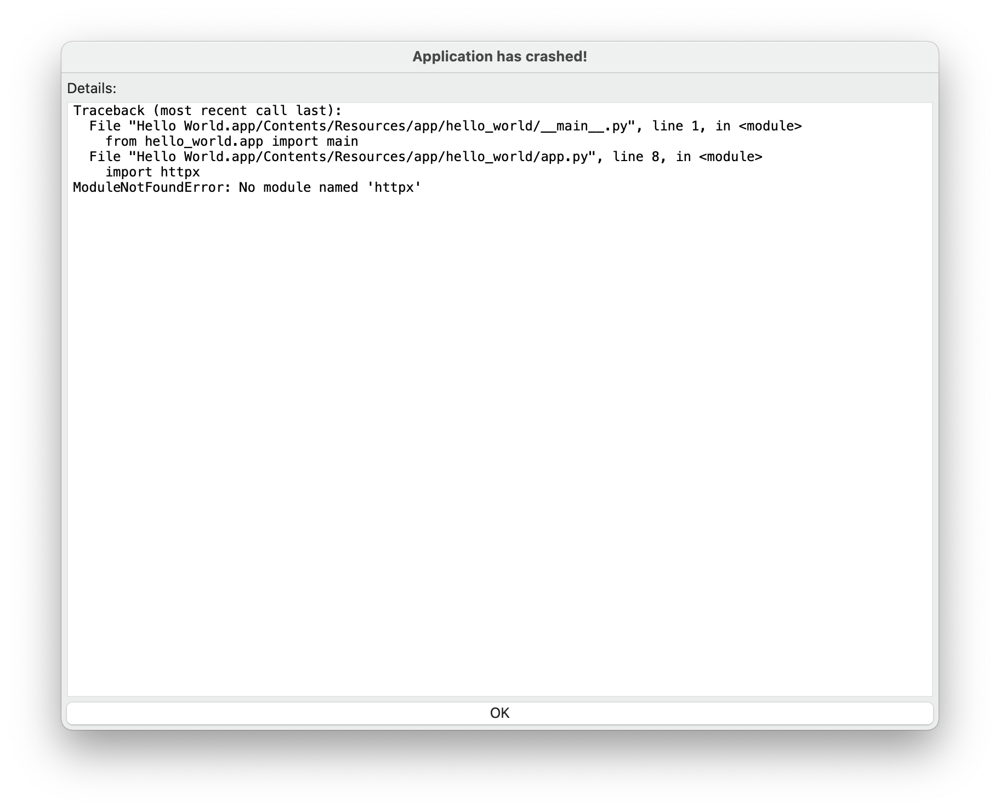

Tutorial 6 - Get this (third)-party started¶
So far, the app we’ve built has only used our own code, plus the code provided by BeeWare. However, in a real-world app, you’ll likely want to use a third-party library, downloaded from the Python Package Index (PyPI).
Let’s modify our app to include a third-party library.
Accessing an API¶
A common task an app will need to perform is to make a request on a web API to retrieve data, and display that data to the user. This is a toy app, so we don’t have a real API to work with, so we’ll use the {JSON} Placeholder API as a source of data.
{JSON} Placeholder API has a number of “fake” API endpoints you can use as test
data. One of those APIs is the /posts/ endpoint, which returns fake blog
posts. If you open https://jsonplaceholder.typicode.com/posts/42 in your
browser, you’ll get a JSON payload describing a single post - some Lorum ipsum content for a blog post with ID 42.
The Python standard library contains all the tools you’d need to access an API. However, the built-in APIs are very low level. They are good implementations of the HTTP protocol - but they require the user to manage lots of low-level details, like URL redirection, sessions, authentication, and payload encoding. As a “normal browser user” you’re probably used to taking these details for granted, as a browser manages these details for you.
As a result, people have developed third-party libraries that wrap the built-in APIs and provide a simpler API that is a closer match for the everyday browser experience. We’re going to use one of those libraries to access the {JSON} Placeholder API - a library called httpx.
Let’s add a httpx API call to our app. Add an import to the top of the
app.py to import httpx:
import httpx
Then modify the say_hello() callback so it looks like this:
def say_hello(self, widget):
if self.name_input.value:
name = self.name_input.value
else:
name = 'stranger'
with httpx.Client() as client:
response = client.get("https://jsonplaceholder.typicode.com/posts/42")
payload = response.json()
self.main_window.info_dialog(
"Hello, {}".format(name),
payload["body"],
)
This will change the say_hello() callback so that when it is invoked, it
will:
make a GET request on the JSON placeholder API to obtain post 42;
decode the response as JSON;
extract the body of the post; and
include the body of that post as the text of the dialog.
Lets run our updated app in Briefcase developer mode to check that our change has worked.
(beeware-venv) $ briefcase dev
Traceback (most recent call last):
File ".../venv/bin/briefcase", line 5, in <module>
from briefcase.__main__ import main
File ".../venv/lib/python3.9/site-packages/briefcase/__main__.py", line 3, in <module>
from .cmdline import parse_cmdline
File ".../venv/lib/python3.9/site-packages/briefcase/cmdline.py", line 6, in <module>
from briefcase.commands import DevCommand, NewCommand, UpgradeCommand
File ".../venv/lib/python3.9/site-packages/briefcase/commands/__init__.py", line 1, in <module>
from .build import BuildCommand # noqa
File ".../venv/lib/python3.9/site-packages/briefcase/commands/build.py", line 5, in <module>
from .base import BaseCommand, full_options
File ".../venv/lib/python3.9/site-packages/briefcase/commands/base.py", line 14, in <module>
import httpx
ModuleNotFoundError: No module named 'httpx'
(beeware-venv) $ briefcase dev
Traceback (most recent call last):
File ".../venv/bin/briefcase", line 5, in <module>
from briefcase.__main__ import main
File ".../venv/lib/python3.9/site-packages/briefcase/__main__.py", line 3, in <module>
from .cmdline import parse_cmdline
File ".../venv/lib/python3.9/site-packages/briefcase/cmdline.py", line 6, in <module>
from briefcase.commands import DevCommand, NewCommand, UpgradeCommand
File ".../venv/lib/python3.9/site-packages/briefcase/commands/__init__.py", line 1, in <module>
from .build import BuildCommand # noqa
File ".../venv/lib/python3.9/site-packages/briefcase/commands/build.py", line 5, in <module>
from .base import BaseCommand, full_options
File ".../venv/lib/python3.9/site-packages/briefcase/commands/base.py", line 14, in <module>
import httpx
ModuleNotFoundError: No module named 'httpx'
(beeware-venv)C:\...>briefcase dev
Traceback (most recent call last):
File "...\venv\bin\briefcase", line 5, in <module>
from briefcase.__main__ import main
File "...\venv\lib\python3.9\site-packages\briefcase\__main__.py", line 3, in <module>
from .cmdline import parse_cmdline
File "...\venv\lib\python3.9\site-packages\briefcase\cmdline.py", line 6, in <module>
from briefcase.commands import DevCommand, NewCommand, UpgradeCommand
File "...\venv\lib\python3.9\site-packages\briefcase\commands\__init__.py", line 1, in <module>
from .build import BuildCommand # noqa
File "...\venv\lib\python3.9\site-packages\briefcase\commands\build.py", line 5, in <module>
from .base import BaseCommand, full_options
File "...\venv\lib\python3.9\site-packages\briefcase\commands\base.py", line 14, in <module>
import httpx
ModuleNotFoundError: No module named 'httpx'
What happened? We’ve added httpx to our code, but we haven’t added it to
our development virtual environment. We can fix this by installing httpx
with pip, and then re-running briefcase dev:
(beeware-venv) $ python -m pip install httpx
(beeware-venv) $ briefcase dev
When you enter a name and press the button, you should see a dialog that looks something like:
(beeware-venv) $ python -m pip install httpx
(beeware-venv) $ briefcase dev
When you enter a name and press the button, you should see a dialog that looks something like:
(beeware-venv)C:\...>python -m pip install httpx
(beeware-venv)C:\...>briefcase dev
When you enter a name and press the button, you should see a dialog that looks something like:
We’ve now got a working app, using a third party library, running in development mode!
Running the updated app¶
Let’s get this updated application code packaged as a standalone app. Since we’ve made code changes, we need to follow the same steps as in Tutorial 4:
Update the code in the packaged app:
(beeware-venv) $ briefcase update
[hello-world] Updating application code...
Installing src/hello_world...
[hello-world] Application updated.
Rebuild the app:
(beeware-venv) $ briefcase build
[hello-world] Building AppImage...
...
[hello-world] Built linux/Hello_World-0.0.1-x86_64.AppImage
And finally, run the app:
(beeware-venv) $ briefcase run
[hello-world] Starting app...
However, when the app runs, you’ll see a crash dialog:

Update the code in the packaged app:
(beeware-venv) $ briefcase update
[hello-world] Updating application code...
Installing src/hello_world...
[hello-world] Application updated.
Rebuild the app:
(beeware-venv) $ briefcase build
[hello-world] Building AppImage...
...
[hello-world] Built linux/Hello_World-0.0.1-x86_64.AppImage
And finally, run the app:
(beeware-venv) $ briefcase run
[hello-world] Starting app...
Traceback (most recent call last):
File "/tmp/.mount_Hello_ifthSH/usr/lib/python3.8/runpy.py", line 194, in _run_module_as_main
return _run_code(code, main_globals, None,
File "/tmp/.mount_Hello_ifthSH/usr/lib/python3.8/runpy.py", line 87, in _run_code
exec(code, run_globals)
File "/tmp/.mount_Hello_ifthSH/usr/app/hello_world/__main__.py", line 1, in <module>
from hello_world.app import main
File "/tmp/.mount_Hello_ifthSH/usr/app/hello_world/app.py", line 8, in <module>
import httpx
ModuleNotFoundError: No module named 'httpx'
Unable to start app hello-world.
Update the code in the packaged app:
(beeware-venv)C:...>briefcase update
[hello-world] Updating application code… Installing src/hello_world…
[hello-world] Application updated.
Rebuild the app:
(beeware-venv)C:\...>briefcase build
[hello-world] Built windows/msi/Hello World
And finally, run the app:
(beeware-venv)C:\...>briefcase run
[hello-world] Starting app...
Unable to start app hello-world.
Once again, the app has failed to start because httpx has been installed - but
why? Haven’t we already installed httpx?
We have - but only in the development environment. Your development environment is entirely local to your machine - and is only enabled when you explicitly activate it. Although Briefcase has a development mode, the main reason you’d use Briefcase is to package up your code so you can give it to someone else.
The only way to guarantee that someone else will have a Python environment that
contains everything it needs is to build a completely isolated Python
environment. This means there’s a completely isolated Python install, and a
completely isolated set of dependencies. This is what Briefcase is building when
you run briefcase build - an isolated Python environment. This also explains
why httpx isn’t installed - it has been installed in the your development
environment, but not in the packaged app.
So - we need to tell Briefcase that our app has an external dependency.
Updating dependencies¶
In the root directory of your app, there is a file named pyproject.toml.
This file contains all the app configuration details that you provided when
you originally ran briefcase new.
pyproject.toml is broken up into sections; one of the sections describes
the settings for your app:
[tool.briefcase.app.hello-world]
formal_name = "Hello World"
description = "A Tutorial app"
icon = "src/hello_world/resources/hello-world"
sources = ['src/hello_world']
requires = []
The requires option describes the dependencies of our application. It is
a list of strings, specifying libraries (and, optionally, versions) of libraries
that you want to be included with your app.
Modify the requires setting so that it reads:
requires = [
"httpx",
]
By adding this setting, we’re telling Briefcase “when you build my app, run
pip install httpx into the application bundle”. Anything that would be legal
input to pip install can be used here - so, you could specify:
A specific library version (e.g.,
"httpx==0.19.0");A range of library versions (e.g.,
"httpx>=0.19");A path to a git repository (e.g.,
"git+https://github.com/encode/httpx"); orA local file path (However - be warned: if you give your code to someone else, this path probably won’t exist on their machine!)
Further down in pyproject.toml, you’ll notice other sections that are
operating system dependent, like [tool.briefcase.app.hello-world.macOS] and
[tool.briefcase.app.hello-world.windows]. These sections also have a
requires setting. These settings allow you to define additional
platform-specific dependencies - so, for example, if you need a
platform-specific library to handle some aspect of your app, you can specify
that library in the platform-specific requires section, and that setting
will only be used for that platform. You will notice that the toga libraries
are all specified in the platform-specific requires section - this is
because the libraries needed to display a user interface are platform specific.
In our case, we want httpx to be installed on all platforms, so we use the
app-level requires setting. The app-level dependencies will always be
installed; the platform-specific dependecies are installed in addition to the
app-level ones.
Python only on mobile (for now!)
On desktop platforms (macOS, Windows, Linux), any pip-installable can
be added to your requirements. On mobile platforms, your options are a
little more limited - you can only use pure Python packages i.e.,
packages that do not contain a binary module.
This means that libraries like numpy, scikit-learn, or
cryptography can be used in a desktop app, but not a mobile app.
This is primarily because mobile apps require binary modules that are compiled
for multiple platforms, which is difficult to set up.
It’s possible to build a mobile Python app that uses binary modules, but it’s not easy to set up – well outside the scope of an introductory tutorial like this one. This is an area that we’d like to address - but it’s not a simple task. If you’d like to see this added to BeeWare, please consider supporting the project by becoming a member.
Now that we’ve told Briefcase about our additional dependencies, we can try
packaging our app again. Ensure that you’ve saved your changes to
pyproject.toml, and then update your app again - this time, passing in the
-d flag. This tells Briefcase to update dependencies in the packaged app:
(beeware-venv) $ briefcase update -d
[hello-world] Updating dependencies...
Collecting httpx
Using cached httpx-0.19.0-py3-none-any.whl (77 kB)
...
Installing collected packages: sniffio, idna, travertino, rfc3986, h11, anyio, toga-core, rubicon-objc, httpcore, charset-normalizer, certifi, toga-cocoa, httpx
Successfully installed anyio-3.3.2 certifi-2021.10.8 charset-normalizer-2.0.6 h11-0.12.0 httpcore-0.13.7 httpx-0.19.0 idna-3.2 rfc3986-1.5.0 rubicon-objc-0.4.1 sniffio-1.2.0 toga-cocoa-0.3.0.dev28 toga-core-0.3.0.dev28 travertino-0.1.3
[hello-world] Updating application code...
Installing src/hello_world...
[hello-world] Application updated.
(beeware-venv) $ briefcase update -d
[hello-world] Updating dependencies...
Collecting httpx
Using cached httpx-0.19.0-py3-none-any.whl (77 kB)
...
Installing collected packages: sniffio, idna, travertino, rfc3986, h11, anyio, toga-core, rubicon-objc, httpcore, charset-normalizer, certifi, toga-cocoa, httpx
Successfully installed anyio-3.3.2 certifi-2021.10.8 charset-normalizer-2.0.6 h11-0.12.0 httpcore-0.13.7 httpx-0.19.0 idna-3.2 rfc3986-1.5.0 rubicon-objc-0.4.1 sniffio-1.2.0 toga-cocoa-0.3.0.dev28 toga-core-0.3.0.dev28 travertino-0.1.3
[hello-world] Updating application code...
Installing src/hello_world...
[hello-world] Application updated.
(beeware-venv)C:\...>briefcase update -d
[hello-world] Updating dependencies...
Collecting httpx
Using cached httpx-0.19.0-py3-none-any.whl (77 kB)
...
Installing collected packages: sniffio, idna, travertino, rfc3986, h11, anyio, toga-core, rubicon-objc, httpcore, charset-normalizer, certifi, toga-cocoa, httpx
Successfully installed anyio-3.3.2 certifi-2021.10.8 charset-normalizer-2.0.6 h11-0.12.0 httpcore-0.13.7 httpx-0.19.0 idna-3.2 rfc3986-1.5.0 rubicon-objc-0.4.1 sniffio-1.2.0 toga-cocoa-0.3.0.dev28 toga-core-0.3.0.dev28 travertino-0.1.3
[hello-world] Updating application code...
Installing src/hello_world...
[hello-world] Application updated.
Once you’ve updated, you can run briefcase build and briefcase run -
and you should see your packaged app, with the new dialog behavior.
Next steps¶
We’ve now got an app that uses a third-party library! However, you may have noticed that when you press the button, the app becomes a little unresponsive. Can we do anything to fix this? Turn to Tutorial 7 to find out…